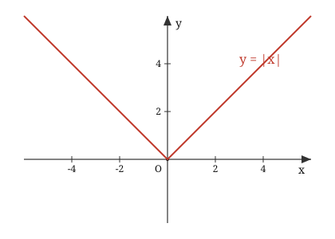
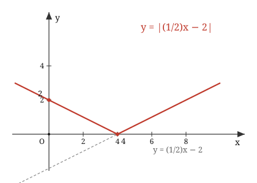
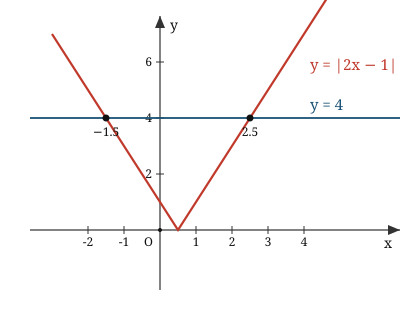
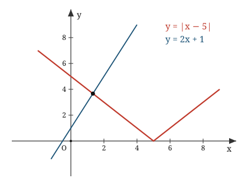

<script>if(location.hostname.endsWith('onrender.com'))location.replace('https://math-sandbox.pages.dev'+location.pathname+location.search+location.hash)</script>
<section class="theory" data-section="P23-1.2">
<h2>1.2 Graphs of \(y=\lvert f(x)\rvert\) where \(f(x)\) is linear</h2>
<p class="src">Based on Cambridge International AS &amp; A Level Mathematics: Pure Mathematics 2 &amp; 3 Coursebook (Sue Pemberton and Julianne Hughes), Chapter 1 Algebra, printed p.7 (Worked example 1.4, Exercise 1B). The printed heading is “Graphs of \(y=\lvert f(x)\rvert\) where \(f(x)\) is linear”. Own wording and new numbers. Modulus inequalities belong to Section 1.3 and are not used here.</p>
<p class="key-words"><strong>Key words:</strong> <em>modulus function</em>, <em>vertex</em></p>
<h3>From a straight line to a V-shape</h3>
<p>To sketch the graph of \(y=\lvert x\rvert\), first draw the line \(y=x\). Then reflect, in the \(x\)-axis, the part of that line that lies below the \(x\)-axis. The result is a V-shaped graph with its <strong>vertex</strong> at the origin.</p>
<p></p>
<p>The same method works for \(y=\lvert ax+b\rvert\) whenever \(f(x)=ax+b\) is linear: draw the line \(y=ax+b\), then reflect the part below the \(x\)-axis. The vertex is the point where the line meets the \(x\)-axis, namely \(\left(-\dfrac{b}{a},\,0\right)\) when \(a\neq 0\). The \(y\)-intercept of \(y=\lvert ax+b\rvert\) is \(\lvert b\rvert\).</p>
<div class="worked-example">
<h4>Worked example 1: Sketching \(y=\lvert \frac{1}{2}x-2\rvert\)</h4>
<p class="src">Book: Worked example 1.4, p.7; new numbers</p>
<p>Sketch the graph of \(y=\left\lvert \dfrac{1}{2}x-2\right\rvert\), showing the points where the graph meets the axes. Use the graph to express \(\left\lvert \dfrac{1}{2}x-2\right\rvert\) in an alternative form.</p>
<ol class="steps">
<li>The line \(y=\dfrac{1}{2}x-2\) has gradient \(\dfrac{1}{2}\) and \(y\)-intercept \(-2\). It meets the \(x\)-axis where \(\dfrac{1}{2}x-2=0\), so \(x=4\). <span class="mark">B1</span></li>
<li>Reflect the part of the line below the \(x\)-axis to obtain a V-shape with vertex \((4,0)\) and \(y\)-intercept 2. <span class="mark">B1</span></li>
<li>The alternative form is
$$\left\lvert \dfrac{1}{2}x-2\right\rvert=\begin{cases}\dfrac{1}{2}x-2 &amp; \text{if }x\geqslant 4,\\ 2-\dfrac{1}{2}x &amp; \text{if }x\lt 4.\end{cases}$$
<span class="mark">A1</span></li>
</ol>
<p></p>
<p class="final"><strong>Answer:</strong> vertex \((4,0)\), \(y\)-intercept 2; the piecewise form above</p>
</div>
<h3>Solving modulus equations from a graph</h3>
<p>The roots of \(\lvert ax+b\rvert=k\) are the \(x\)-coordinates of the points of intersection of \(y=\lvert ax+b\rvert\) and the horizontal line \(y=k\). The roots of \(\lvert ax+b\rvert=cx+d\) are the \(x\)-coordinates of the intersections of \(y=\lvert ax+b\rvert\) and the line \(y=cx+d\). A straight line may meet a V-shape at two points, at one point, or not at all, which is why some algebraic candidates have to be rejected.</p>
<div class="worked-example">
<h4>Worked example 2: A horizontal line meeting a V-shape</h4>
<p class="src">Book: page 7 (graphical reading of Worked example 1.1(a)); new numbers</p>
<p>The diagram shows the graphs of \(y=\lvert 2x-1\rvert\) and \(y=4\). Write down the solutions of \(\lvert 2x-1\rvert=4\).</p>
<p></p>
<ol class="steps">
<li>The graphs meet at \(x=-1.5\) and at \(x=2.5\). <span class="mark">B1</span></li>
<li>Check: \(\lvert 2\times(-1.5)-1\rvert=\lvert -4\rvert=4\) and \(\lvert 2\times 2.5-1\rvert=\lvert 4\rvert=4\). <span class="mark">A1</span></li>
</ol>
<p class="final"><strong>Answer:</strong> \(x=-1.5\) or \(x=2.5\)</p>
</div>
<div class="worked-example">
<h4>Worked example 3: A slanted line meeting a V-shape once</h4>
<p class="src">Book: page 7 (graphical reading of Worked example 1.1(b)); new numbers</p>
<p>The diagram shows the graphs of \(y=\lvert x-5\rvert\) and \(y=2x+1\). Use the graph to solve \(\lvert x-5\rvert=2x+1\).</p>
<p></p>
<ol class="steps">
<li>The line meets the V-shape at only one point. Algebraically, \(x-5=2x+1\) gives the candidate \(x=-6\), which does not lie on both graphs because the line is negative there, and \(x-5=-(2x+1)\) gives \(x=\dfrac{4}{3}\). <span class="mark">M1</span></li>
<li>At \(x=\dfrac{4}{3}\), both sides equal \(\dfrac{11}{3}\). This is the unique solution. <span class="mark">A1</span></li>
</ol>
<p class="final"><strong>Answer:</strong> \(x=\dfrac{4}{3}\)</p>
</div>
<h3>Common mistakes</h3>
<ul>
<li>Forgetting to reflect the part of the line that lies below the \(x\)-axis, and drawing \(y=ax+b\) instead of \(y=\lvert ax+b\rvert\).</li>
<li>Putting the vertex at the \(y\)-intercept instead of at the \(x\)-intercept of the original line.</li>
<li>Assuming that a straight line always meets a V-shape at two points.</li>
</ul>
<h3>Quick checks</h3>
<div class="quick-check">
<h4>Quick check 1</h4>
<p>The graph of \(y=\lvert 2x-6\rvert\) has a vertex on the \(x\)-axis. Write down the \(x\)-coordinate of the vertex.</p>
<details><summary>Worked solution</summary>
<ol class="steps">
<li>\(2x-6=0\) gives \(x=3\).</li>
</ol>
<p class="final"><strong>Answer:</strong> \(3\)</p>
</details>
</div>
<div class="quick-check">
<h4>Quick check 2</h4>
<p>Find the \(y\)-intercept of \(y=\lvert 3x-8\rvert\).</p>
<details><summary>Worked solution</summary>
<ol class="steps">
<li>When \(x=0\), \(y=\lvert -8\rvert=8\).</li>
</ol>
<p class="final"><strong>Answer:</strong> \(8\)</p>
</details>
</div>
<div class="quick-check">
<h4>Quick check 3</h4>
<p>Evaluate \(\lvert 2x-5\rvert\) at \(x=1\).</p>
<details><summary>Worked solution</summary>
<ol class="steps">
<li>\(\lvert 2-5\rvert=3\).</li>
</ol>
<p class="final"><strong>Answer:</strong> \(3\)</p>
</details>
</div>
<p class="marks-key"><strong>Marks:</strong> M = method, A = accurate answer (depends on M), B = independent mark. Marks on worked examples are illustrative, not official. Give exact values. To sketch \(y=\lvert ax+b\rvert\), draw the line \(y=ax+b\) and reflect the part below the \(x\)-axis; the vertex is at \(x=-b/a\).</p>
</section>
